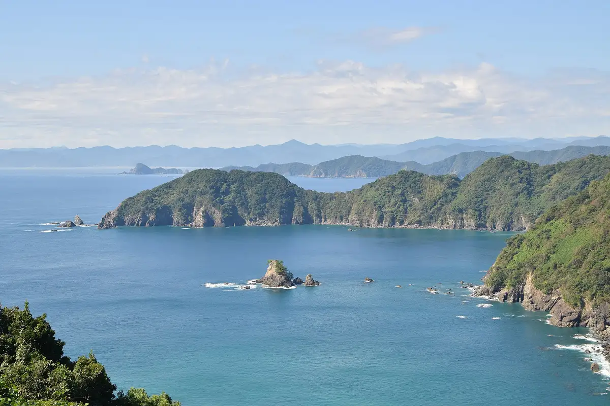
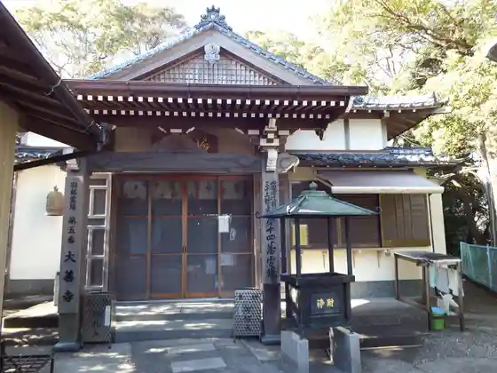
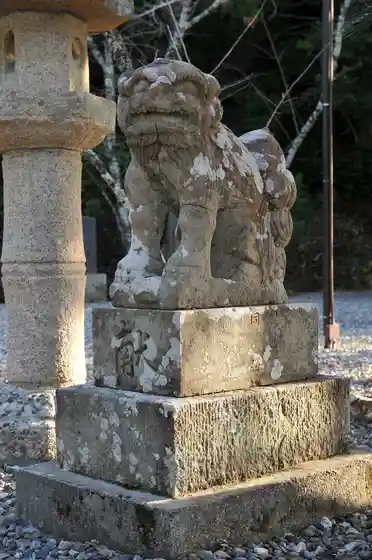
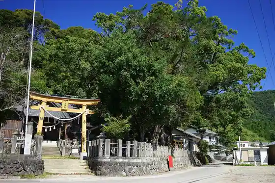

Susaki
Susaki · Kochi
Susaki
Highlighted on the Kochi map.

Stay
HOTEL AZ Kochi Susaki Mise
Hotel Bandaga
Sennen no Bi Yu Soda Yama Onsen Wa YAWARAGI
Minshuku Nazuna
Guest House Sante
Dining
Daruma
Resutoran Toreta Tei
Takeuchi
Basara Hanare Ya
Kissa Anna Village
Shipu Line Dianresutoran
Tori Yoshi
Suzu
AZcafe -Shidaka- Kochi Susaki Mise
Kiraku
Tsuchii Gi
Piero Kohii Senka
Kaitenzushi Ichiban Fune
Itaria Ryori Regaro
Susaki Tairyo Do
Maimu Kissaten
Experience
Roadside Station Kawauso no Sato Susaki
Sights
Yoko Nami Kuroshio Line
Dai Zen Tera

Mei Mu Shrine

Suga Shrine

Nomi Wan
Kuwata Sansetsu Wari Sakura